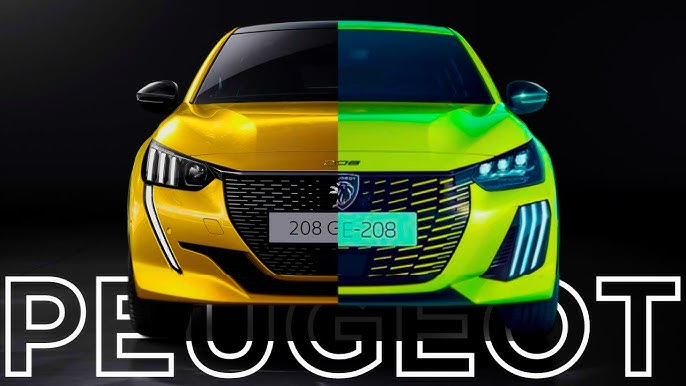
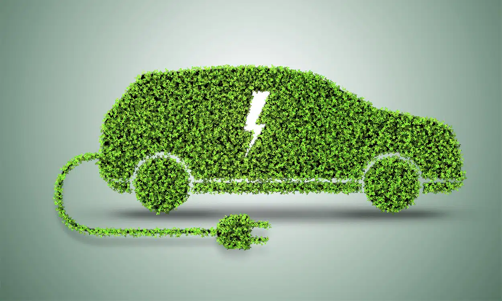
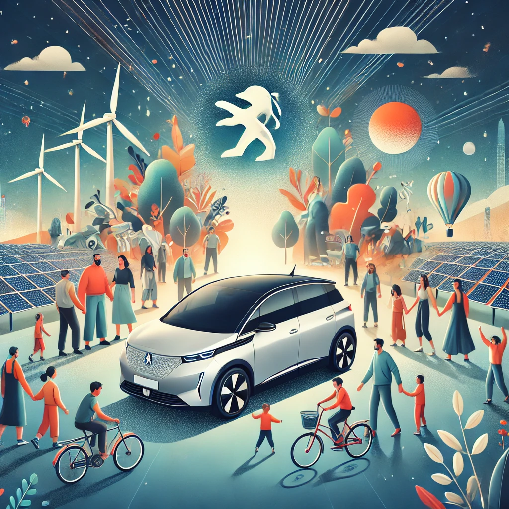
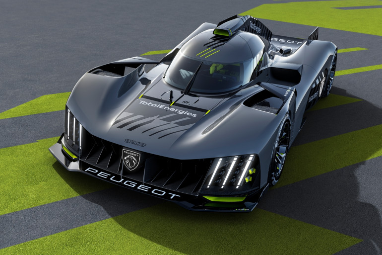

À propos de Peugeot
Peugeot est une marque emblématique, reconnue mondialement pour son innovation, sa fiabilité et son design avant-gardiste. Avec plus de 200 ans d’histoire, la marque a su se réinventer sans cesse, en s’adaptant aux besoins de ses clients tout en respectant des valeurs humaines et écologiques. Aujourd’hui, Peugeot incarne l’esprit de la mobilité durable, la performance et le luxe accessible, tout en continuant de marquer l'industrie automobile de son empreinte.
Notre Mission : Offrir une Mobilité Responsable et Innovante
La mission de Peugeot est d'offrir à ses clients des solutions de mobilité fiables, accessibles et durables. En tant que constructeur automobile, nous sommes engagés à créer des véhicules alliant confort, performance et respect de l’environnement. Peugeot se positionne comme un acteur majeur de la transition énergétique, avec une large gamme de véhicules hybrides et électriques, pour un avenir plus propre.
Nous croyons que la mobilité de demain doit être plus durable, plus connectée et plus intelligente. C'est pourquoi nous mettons l'innovation au cœur de toutes nos démarches, de la conception de nouveaux modèles à l'intégration des dernières technologies, en passant par notre engagement en faveur de la réduction de l'empreinte carbone.
Nos Valeurs : Qualité, Innovation et Responsabilité
Peugeot se fonde sur des valeurs fortes qui orientent chacune de ses décisions. Ces valeurs sont le socle de notre culture d'entreprise et se retrouvent dans tous les aspects de nos produits et services.
- Qualité : Nous avons toujours mis un point d'honneur à offrir des véhicules d'une qualité irréprochable, tant en matière de performance que de sécurité. Chaque Peugeot est conçue pour répondre aux plus hauts standards, offrant ainsi une expérience de conduite optimale.
- Innovation : Chez Peugeot, nous avons toujours été à l'avant-garde de l'innovation automobile. De la première voiture à moteur à essence à nos modèles électriques les plus récents, nous recherchons sans cesse de nouvelles façons d'améliorer l’expérience de nos clients tout en réduisant l'impact environnemental.
- Responsabilité : Nous nous engageons à être responsables, tant sur le plan social qu'environnemental. Cela inclut la réduction de notre empreinte carbone, l'intégration de technologies propres et le soutien à des initiatives écologiques à travers le monde.
Une Entreprise Responsable : L'Engagement pour l'Environnement
Peugeot, en tant que leader de l’automobile, est profondément conscient des enjeux environnementaux actuels. Dans cette perspective, nous avons engagé une transition vers des véhicules de plus en plus écologiques, contribuant activement à la réduction de l’empreinte carbone. Peugeot s’est donné pour objectif de devenir une marque 100 % électrique d’ici 2030, et nous avons déjà fait un pas de géant avec nos modèles hybrides rechargeables et électriques comme la Peugeot e-208 et la Peugeot 3008 PHEV.
Peugeot participe également à des projets d’optimisation de la chaîne de production, en réduisant la consommation d'énergie et les émissions de CO2. Nous favorisons l’utilisation de matériaux recyclés et la conception de véhicules moins polluants, en accord avec notre vision de l’avenir.
Nos Engagements Sociaux : Humanité et Partage
Peugeot est une entreprise humaine, qui place ses employés et ses clients au cœur de ses préoccupations. Nous mettons en place des initiatives sociales pour soutenir la diversité, l’inclusion et le bien-être au travail. Nous encourageons également les actions caritatives et soutenons des associations qui œuvrent pour un monde plus équitable et solidaire.
Nous croyons que le succès d'une entreprise repose non seulement sur sa capacité à innover et à produire des véhicules de qualité, mais également sur son engagement à améliorer la vie des communautés qui l’entourent. C'est pourquoi Peugeot soutient de nombreux projets dans le domaine de l'éducation, de l’environnement et de la solidarité.
Peugeot et le Sport : Une Passion pour la Performance
Peugeot a toujours entretenu une relation étroite avec le sport automobile, en particulier les courses d'endurance, les rallyes et les compétitions de Formule E. La marque a remporté de nombreux titres prestigieux, notamment aux 24 Heures du Mans et au Rallye Dakar, soulignant son esprit de compétition et son engagement envers la performance.
Nos véhicules sont conçus pour repousser les limites, et cette philosophie s'exprime parfaitement dans nos équipes de course. Que ce soit dans le domaine des voitures de rallye, avec des modèles comme la Peugeot 206 WRC, ou dans les compétitions modernes de la Formule E, Peugeot continue de démontrer sa passion pour l'innovation et la performance au plus haut niveau.
Vers un Avenir Durable : Nos Objectifs à Long Terme
Peugeot ne se contente pas de rester sur ses acquis. Nous avons une vision claire pour l'avenir : celle d'une mobilité durable, accessible à tous et respectueuse de notre planète. En plus de notre objectif d'électrification de notre gamme, nous cherchons également à offrir de nouvelles formes de mobilité, telles que le covoiturage, les services de location de voitures électriques et des solutions de transport multimodal.
Notre engagement envers un avenir plus vert et plus connecté est renforcé par nos efforts pour minimiser l'impact environnemental de nos usines et promouvoir des pratiques commerciales plus responsables et transparentes.
Nous sommes convaincus que l’avenir de la mobilité est électrifié, durable et innovant, et nous mettons tout en œuvre pour répondre à ces défis et offrir aux générations futures des véhicules toujours plus responsables, connectés et performants.